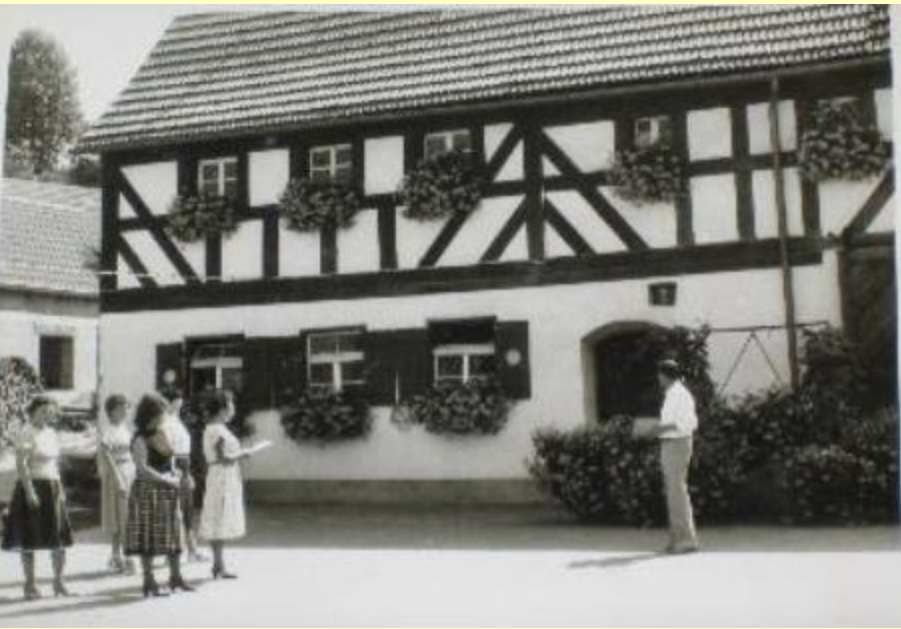
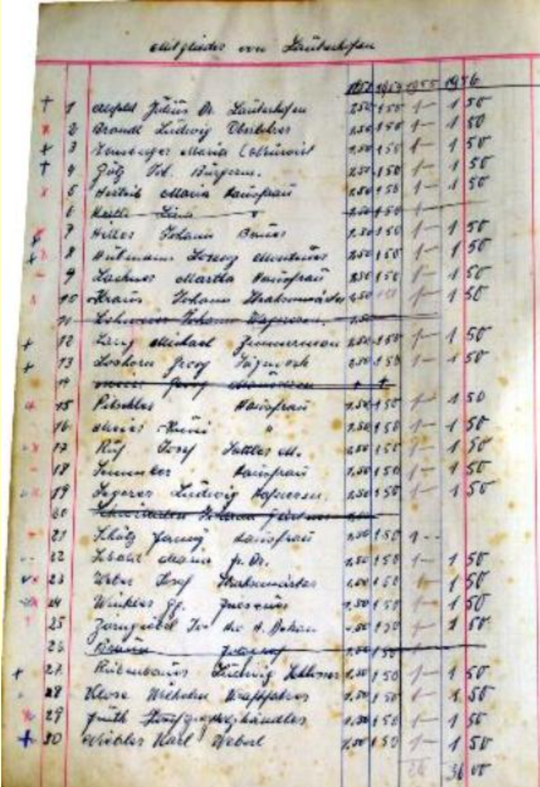
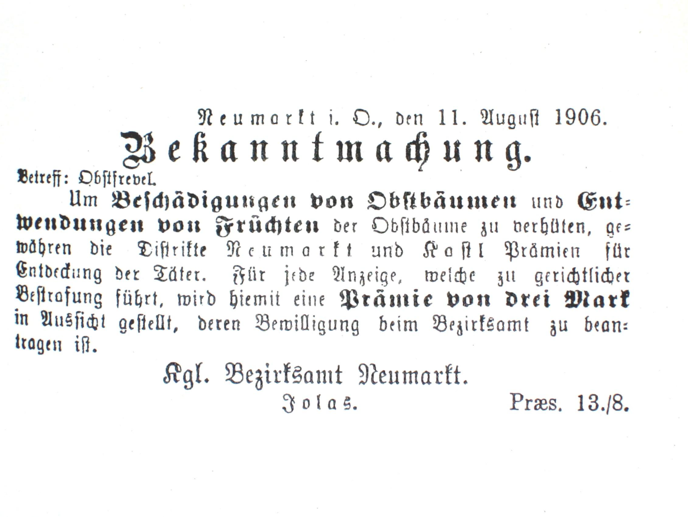

<div class="container pt-5">
    <div class="zeitung">
        <h4 class="text-uppercase"> Historische Fundsachen</h4>

        <div class="artikel1">
            <h5 class="text-uppercase">90 Jahre OGV Pölling</h5>
            <p>
                Beteiligung beim Festzug anlässlich des 90 jährigen Gründungsjubiläum des OGV Pölling 
                durch eine Gruppe des OGV Lauterhofen.
                <br>
            </p>
            
        </div>

        <div class="artikel2">
            <h5 class="text-uppercase">Blumenbewertungskomitee</h5>
            <p>Die Damen des „Blumenwettbewerb -Bewertungskomitees“ mit ihrem Vorsitzenden.</p>
            
        </div>

        <div class="artikel3">
            <h5 class="text-uppercase">1953 - Auszug aus dem Kassenbuch</h5>
            <p>Der damalige jährliche Beitrag betrug 1,50 DM.</p>
            
        </div>

        <div class="artikel4">
            <h5 class="text-uppercase"> 1906 - Bestrafung bei Beschädigung von Obstbäumen</h5>
            <p>Anscheinend nahmen in der damaligen Zeit die Beschädigungen von Obstbäumen immer mehr zu. <br>
                Aus einer Bekanntmachung im Neumarkter Wochenblatt vom Dienstag, 14. August 1906 war zu lesen, dass 
                sogar eine Prämie von drei Mark zur  Entdeckung der Täter in Aussicht gestellt wurde.</p>
            
        </div>

        <div class="artikel5">
            <h5 class="text-uppercase"> 1905 - Bedeutung der Obstbäume</h5>
            <p>Aus dem Zeitungsartikel des Neumarkter Wochenblattes vom Dienstag, 09.Mai 1905 können Sie entnehmen, 
                welche Bedeutung Obstbäume zur damaligen Zeit hatten.</p>

            <p> <b>Klartext des Bildes</b><br>
                (Warnung) Bei dem Eintritt der Baumblüte sei darauf hingewiesen, daß die Beschädigungen  von  Bäumen und  Sträuchern 
                durch Abbrechen von Zweigen und dergleichen nach dem Reichsstrafgesetzbuch  mit Geldstrafe oder Gefängnis bestraft werden. 
                Das Publikum sollte bei etwaigen Ausschreitungen den Uebeltätern entgegen-treten und die Aufsichtsorgane und Flurwächter nach Kräften unterstützen.
            </p>
        </div>

        <div class="aufruf">
            <h5 class="text-uppercase" style="color: white"> Aufruf</h5>
            <p>Wenn Sie noch Bilder oder Zeitungsartikel zu unserem Verein zuhause finden, sind sie
                herzlich eingeladen diese mit uns zu teilen. Wenden Sie sich dafür bitte an Frau Renate Meier.
                (Email: xxx)
            </p>
        </div>

    </div>
</div>